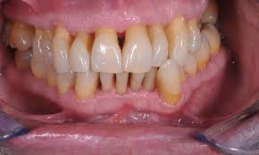
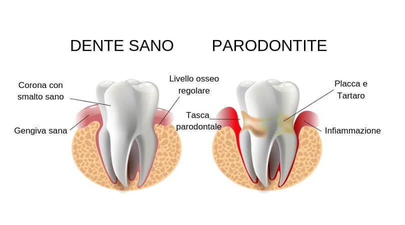
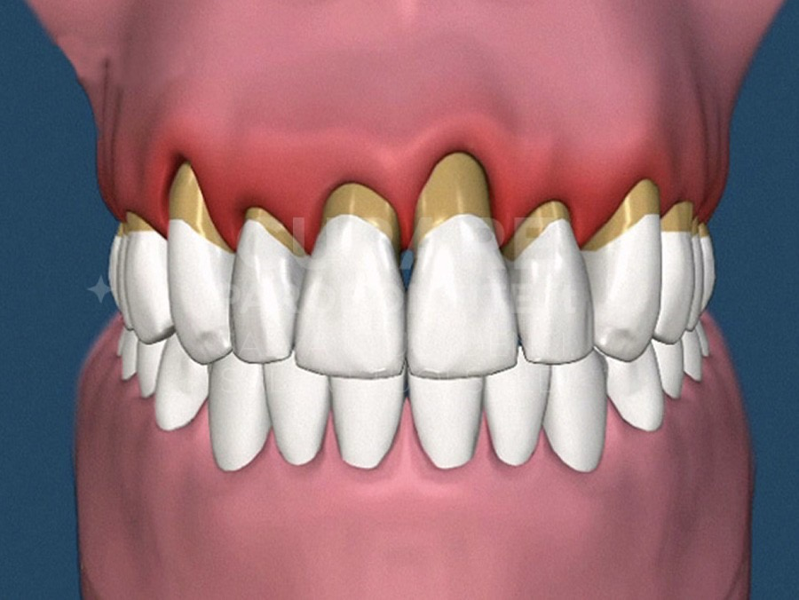

La malattia
parodontale
La malattia parodontale è un’infezione batterica multifattoriale e sitospecifica che colpisce i tessuti di sostegno del dente.
- Batterica: la causa principale e necessaria è la presenza di placca batterica.
- Multifattoriale: fattori come fumo, malattie sistemiche e malocclusioni dentarie possono favorirne l’insorgenza o aggravare i danni causati dai batteri.
- Sitospecifica: può colpire in modo diverso ogni dente o anche singole zone dello stesso, rendendo necessaria una diagnosi individuale dente per dente.

La malattia può manifestarsi come:
- Gengivite: infiammazione reversibile con completa guarigione dei tessuti (“restitutio ad integrum”);
- Parodontite: distruzione irreversibile dei tessuti di sostegno, anche dopo guarigione.
I principali tipi di parodontite sono:
- Cronica
- Aggresiva
- Associata a malattie sistemiche
- Necrotizzante
